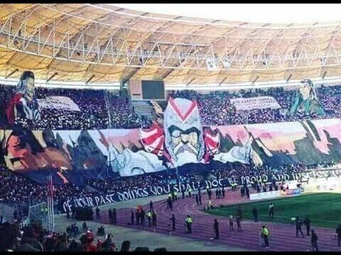
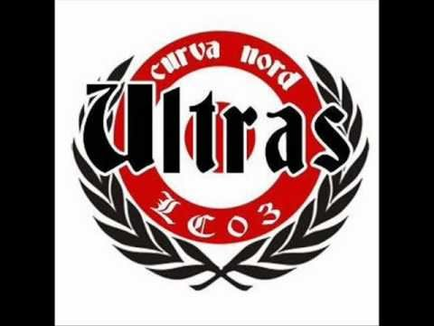
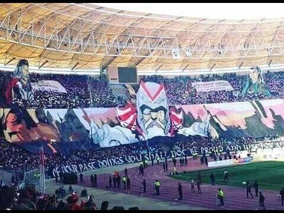
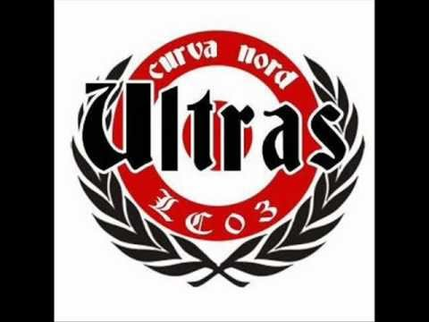
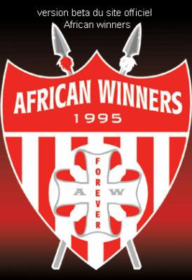
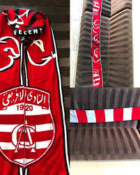
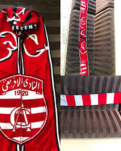
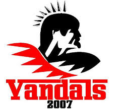

Club african
Club african
Supporters du club africain
Groupes ULTRAS
| ULTRAS |
|---|
Les supporters du Club africain encouragent et soutiennent le club de football tunisien du Club africain, l'un des principaux clubs du pays.
Les supporters du club sont originaires de toute la région de Tunis.
Plusieurs groupes de supporters se déclarent rattachés au club ; leur principale fonction est d'encadrer le public et d'organiser des spectacles (appelés communément dakhla) lors des matchs. Deux sources de financement permettent au groupes de supporters de survivre : les ventes de produits dérivés (t-shirts, casquettes, pulls, écharpes, etc.) ainsi que les donations des membres et des supporters.
Parmi les groupes de supporters clubistes, on peut citer les African Winners, les Leaders Clubistes, les North Vandals, les Dodgers Clubistes, les Africain United, les Yankee Clubistes et les Chicos Latinos. Tous se partagent la galerie nord, derrière le gardien de but, qui est l'endroit de rassemblement des « viragistes » (supporters se plaçant dans cette zone).
 





|
Les principaux groupes
| Africain Winners | Leaders Clubistes | North Vandals | Dodgers Clubistes |
|---|---|---|---|
Les Africain Winners, fondé en 1995, est un groupe de supporters appartenant au mouvement ultra mais n'a aucun statut juridique, comme d'autres groupes ultras en Europe ; il est connu sous le nom de Curva Nord jusqu'en octobre 2003.


|
Les Leaders Clubistes sont un autre groupe de supporters ultras sa devise officielle est « Plus qu'un groupe, un style de vie »
 

|
North Vandals est un groupe ultras Clubiste né à la région de Ben Arous , Rades , Medina jadida et ... ( on peut dire de la banlieue sud de la capitale ).
North ( pour virage nord ) et Vandals ( une civilisation installée en Tunisie et au nord de l Afrique après le romains , des barbares ).
Histoire du groupe :
l'idée est apparue durant la fin de l'année 2007 on s'est réuni tous supporteurs et grands fan du club africain de Ben arous et on s'est dis pourkoi on ne ferais pas des T shirt pour se différencier des autres supporteurs, de cette idée un peu banale est née l'idée de crée un groupe de supporter où la premiére apparition était lors du match contre le CAB, et depuis les North Vandals font fureur dans les stades.  |
dodgers clubiste :Tous se partagent la galerie nord, derrière le gardien de but, qui est l'endroit de rassemblement des « viragistes » (supporters se plaçant dans cette zone).


|
Groupes
| Noms des groupes | Abréviation | Année de création |
|---|---|---|
| African Winners | AW95 | 1995 |
| Leaders Clubistes | LC03 | 2003 |
| Red Devils | RD01 | 2001 |
| North Vandals | NV07 | 2007 |
| Dodgers Clubistes | DC07 | 2007 |
| Africain United | AF08 | 2008 |
| Chicos Latinos | CL08 | 2008 |
| Yankee Clubistes | YC08 | 2008 |
| Los Borrachos | LB09 | 2009 |
| African Fidelio | AF09 | 2009 |
| Smoke Boys | SB09 | 2009 |
| Résistance Clubiste | RC09 | 2009 |
| Soldados Clubistes | SC10 | 2010 |
| Coringa Extremista | CE10 | 2010 |